Pincéis «quase» — a sua escolha
- Em cada pincel, olhe o nosso ao lado do Rebelle (a foto diz qual coluna é qual; clique para ampliar).
- Marque Serve (já pode entrar), Quase (vale mexer mais) ou Não serve (sai).
- No fim, aperte «copiar as minhas escolhas» e cole na conversa — ou mande uma foto da página impressa.
1 Square Hard
Pastel seco de ponta quadrada: blocos e riscos firmes.
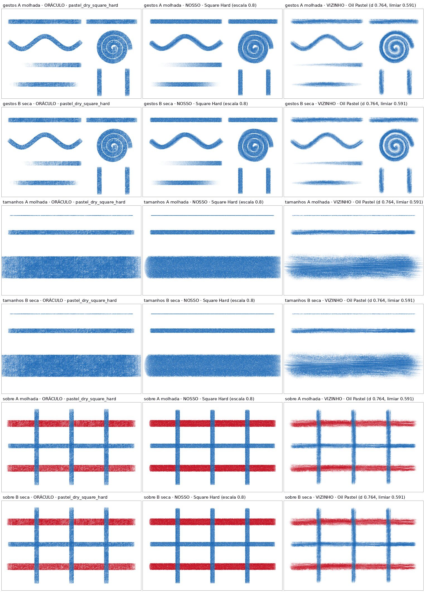
Colunas: 1ª = Rebelle · 2ª = o nosso · 3ª = um pincel parecido da nossa biblioteca (só para comparar).
O revisor ainda viu: A faixa ainda sai sólida demais, como se fosse traçada com régua; pontas ficam arredondadas.
2 Wet Liner
Pincel fino de aquarela para contornos e linhas.
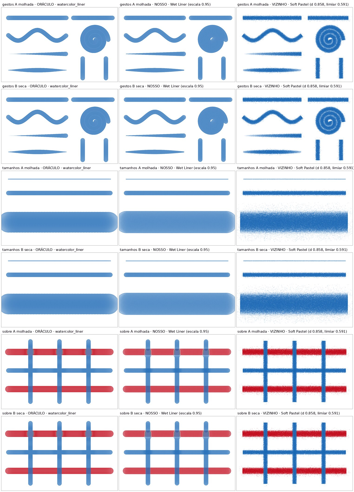
Colunas: 1ª = Rebelle · 2ª = o nosso · 3ª = um pincel parecido da nossa biblioteca (só para comparar).
O revisor ainda viu: Sai chapado, com a ponta (tampa) dura demais.
3 Wet Wash
Pincel largo de aquarela para lavar áreas grandes.
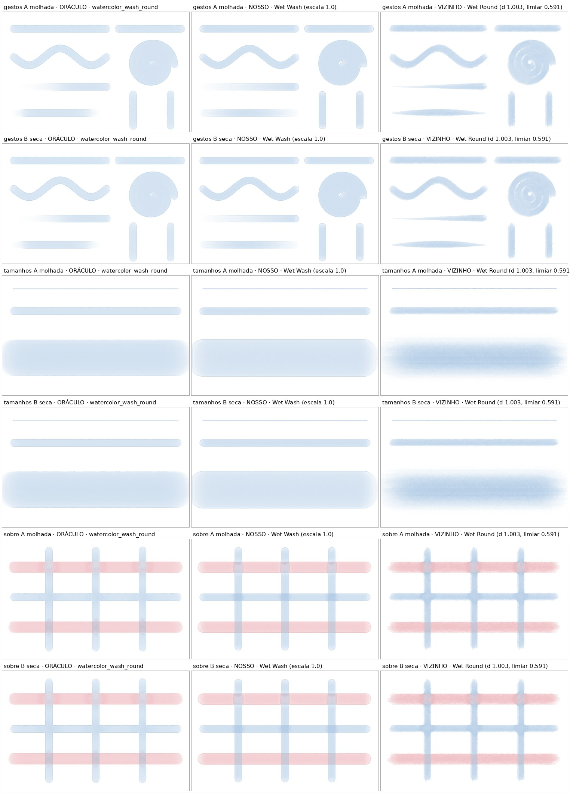
Colunas: 1ª = Rebelle · 2ª = o nosso · 3ª = um pincel parecido da nossa biblioteca (só para comparar).
O revisor ainda viu: Contorno escuro forte em volta e quadradinhos nos cruzamentos.
4 Mop
Pincel redondo e macio de aquarela para manchas grandes.
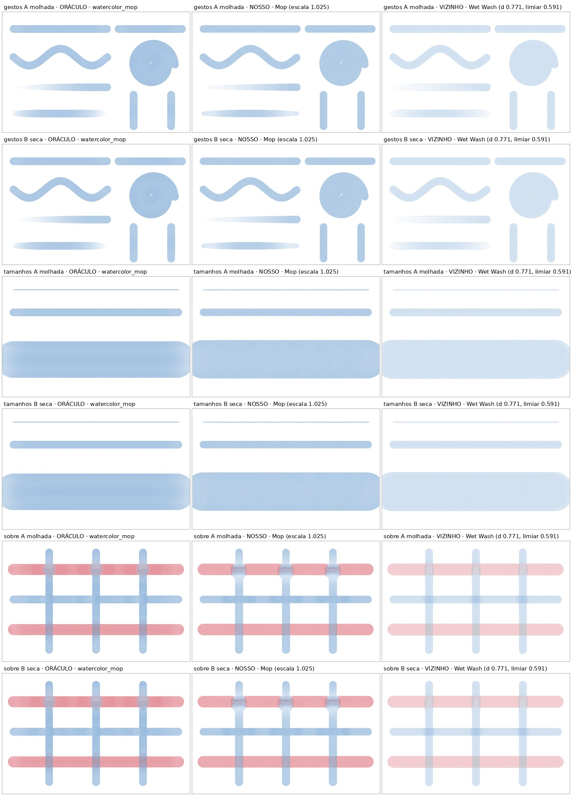
Colunas: 1ª = Rebelle · 2ª = o nosso · 3ª = um pincel parecido da nossa biblioteca (só para comparar).
O revisor ainda viu: O revisor já o reprovou: não se parece com o do Rebelle.
5 Dry/Lift
Pincel seco que tira tinta molhada (clareia).
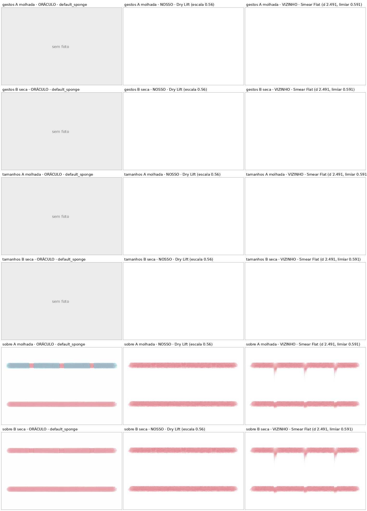
Colunas: 1ª = Rebelle · 2ª = o nosso · 3ª = um pincel parecido da nossa biblioteca (só para comparar).
O revisor ainda viu: Falta a linha escura na borda; o anel puxa tinta de fora.
6 Blender Grainy
Misturador com grão, para fundir cores.
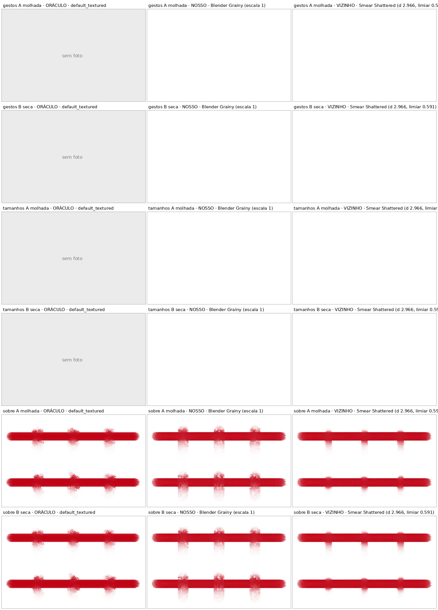
Colunas: 1ª = Rebelle · 2ª = o nosso · 3ª = um pincel parecido da nossa biblioteca (só para comparar).
O revisor ainda viu: Grumos grossos e rasgados onde o Rebelle é mais fino.
7 Gouache Wash
Guache diluído para cobrir áreas.
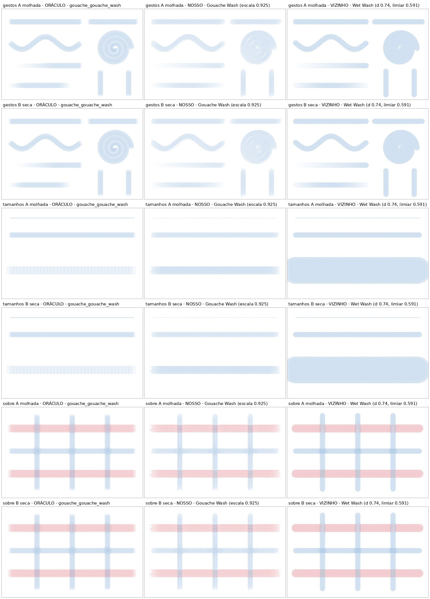
Colunas: 1ª = Rebelle · 2ª = o nosso · 3ª = um pincel parecido da nossa biblioteca (só para comparar).
O revisor ainda viu: Ainda cobre de modo diferente; azul sobre vermelho molhado não bate.
8 Gouache Dry
Guache seco, com marca das cerdas.
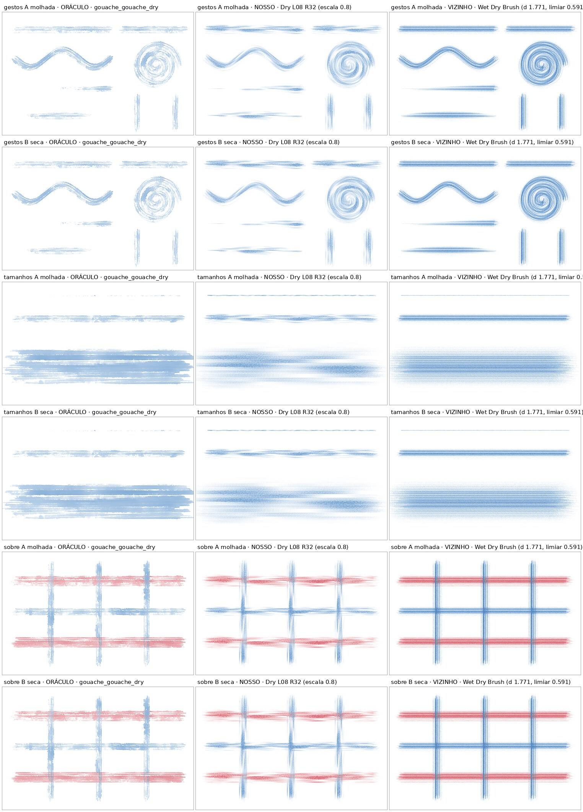
Colunas: 1ª = Rebelle · 2ª = o nosso · 3ª = um pincel parecido da nossa biblioteca (só para comparar).
O revisor ainda viu: Cerdas e cobertura ainda diferentes; azul sobre vermelho molhado não bate.
9 Gouache Flat
Guache de pincel chato, cobre bem.
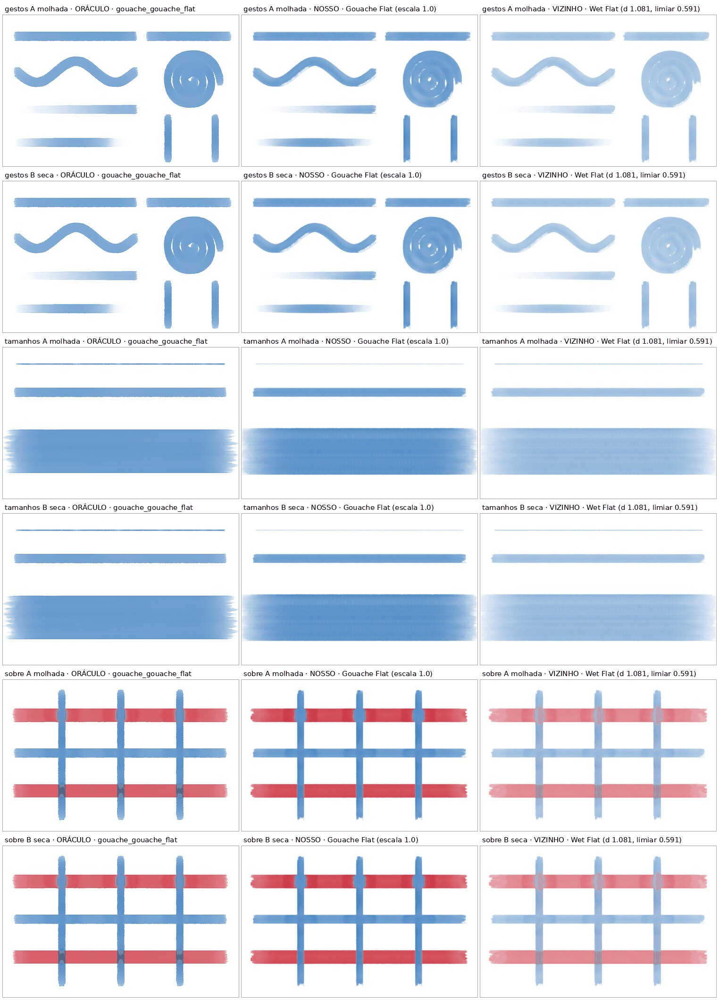
Colunas: 1ª = Rebelle · 2ª = o nosso · 3ª = um pincel parecido da nossa biblioteca (só para comparar).
O revisor ainda viu: Com a cobertura nova a linha fina fica pálida; esta foto é da versão anterior.
10 Smudge Finger
Dedo que arrasta e espalha a tinta.
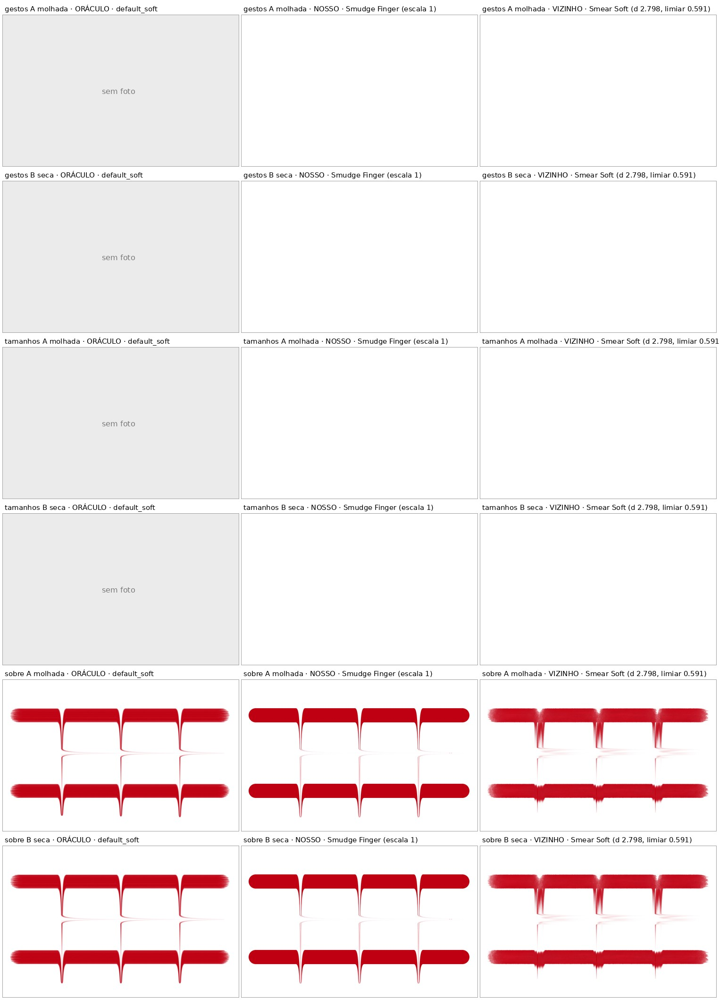
Colunas: 1ª = Rebelle · 2ª = o nosso · 3ª = um pincel parecido da nossa biblioteca (só para comparar).
O revisor ainda viu: O fio arrastado é pálido e a ponta fica oca.
11 Spray Can
Lata de spray: nuvem de pontinhos.
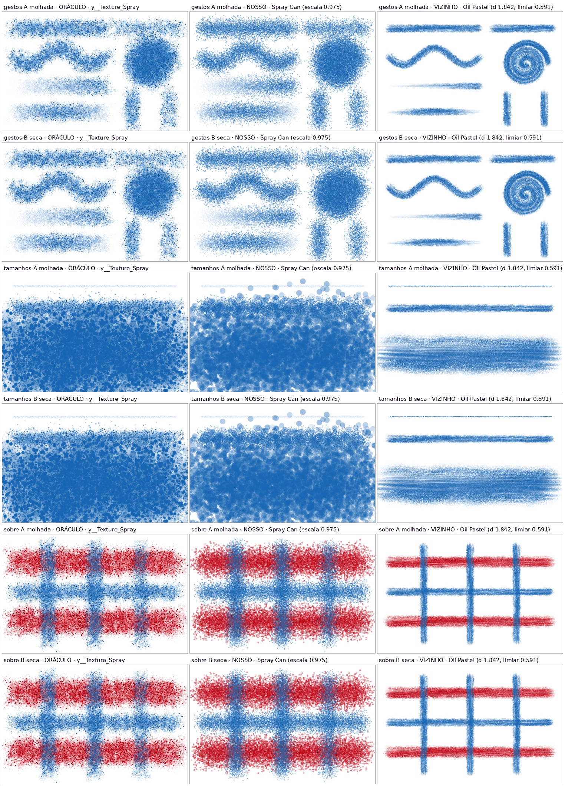
Colunas: 1ª = Rebelle · 2ª = o nosso · 3ª = um pincel parecido da nossa biblioteca (só para comparar).
O revisor ainda viu: Faltam os salpicos escuros; aparecem discos grandes transparentes.
12 Rough Sketch
Lápis de esboço solto.
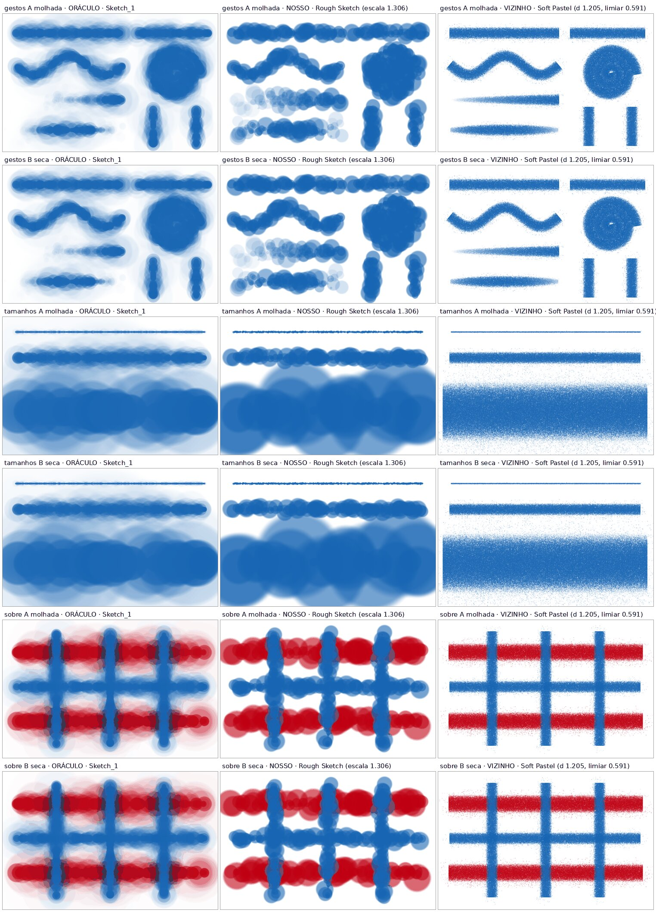
Colunas: 1ª = Rebelle · 2ª = o nosso · 3ª = um pincel parecido da nossa biblioteca (só para comparar).
O revisor ainda viu: Nosso tem discos nítidos; o de fora tem grão de pontinhos e pontas retas.
13 Optical Wash
Lavagem suave que mistura de forma óptica.
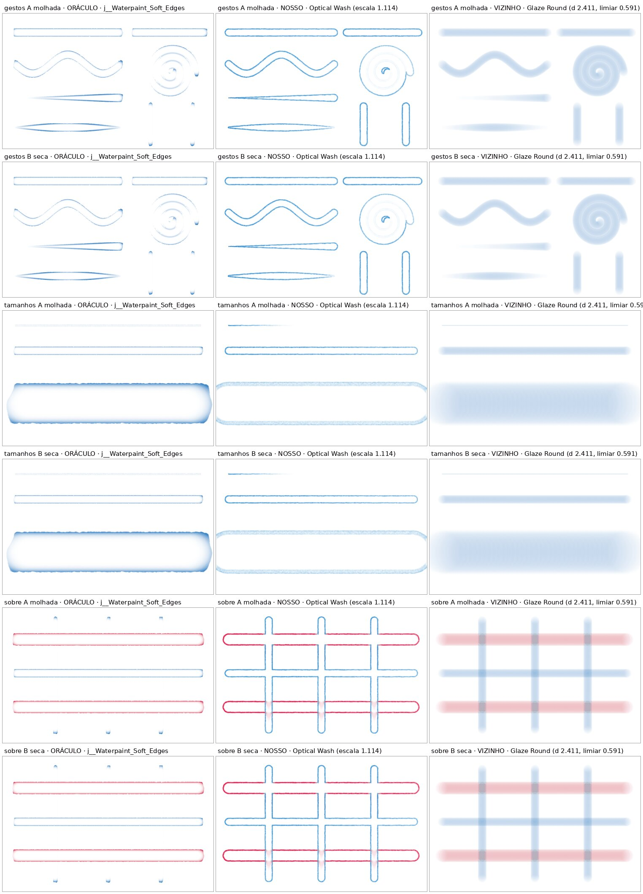
Colunas: 1ª = Rebelle · 2ª = o nosso · 3ª = um pincel parecido da nossa biblioteca (só para comparar).
O revisor ainda viu: Contorno forte e contínuo; o de fora tem franja fraca e irregular.
14 Clouds
Pincel de nuvens: manchas grandes e macias.
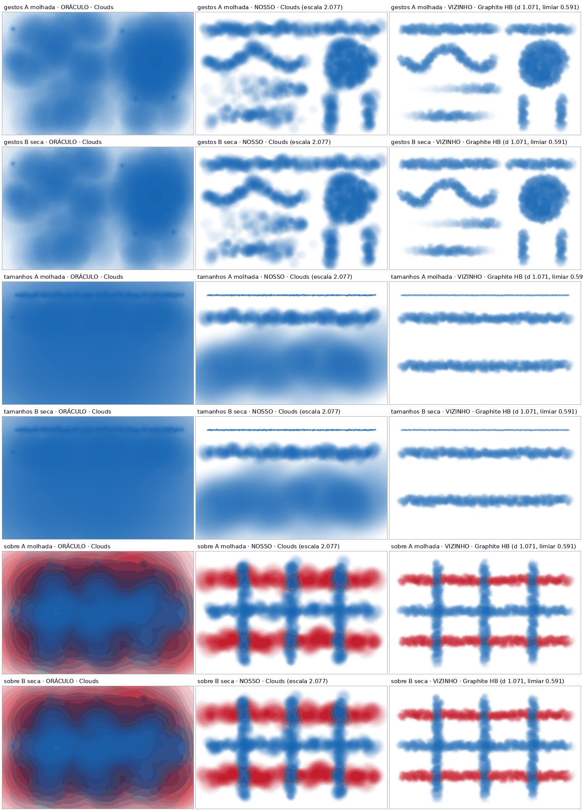
Colunas: 1ª = Rebelle · 2ª = o nosso · 3ª = um pincel parecido da nossa biblioteca (só para comparar).
O revisor ainda viu: O de fora enche tudo numa massa; o nosso faz traços separados.
15 Reed Pen
Caneta de bambu: traço que muda de largura com a direção.
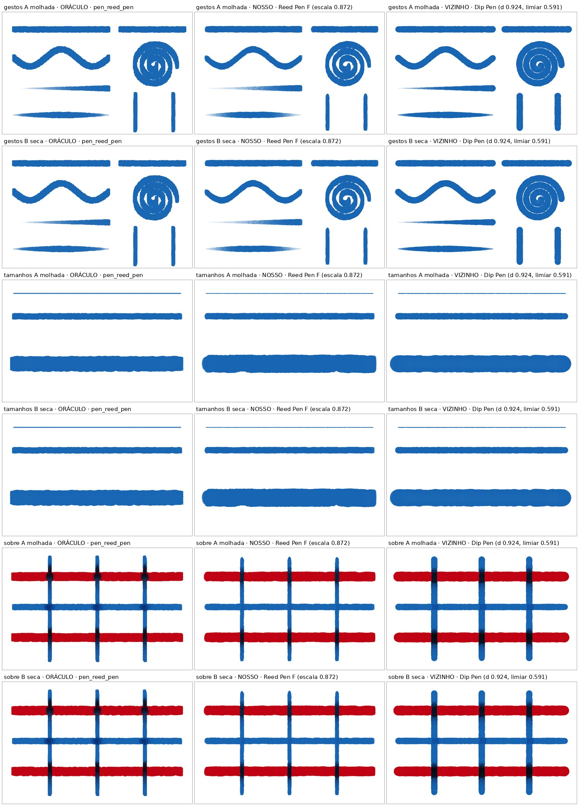
Colunas: 1ª = Rebelle · 2ª = o nosso · 3ª = um pincel parecido da nossa biblioteca (só para comparar).
O revisor ainda viu: Pontas redondas em tamanho grande; a espiral fecha cheia.
16 Wood Stick
Graveto com tinta: traço irregular e seco.
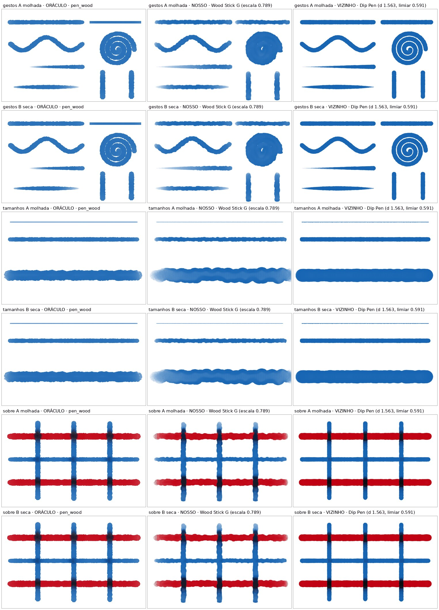
Colunas: 1ª = Rebelle · 2ª = o nosso · 3ª = um pincel parecido da nossa biblioteca (só para comparar).
O revisor ainda viu: Pontas redondas em tamanho grande; a espiral fecha cheia.
17 Marker Chisel
Marcador de ponta chanfrada.
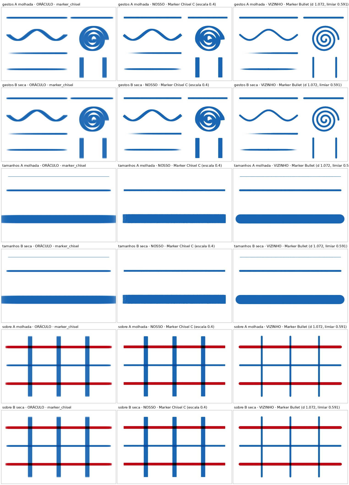
Colunas: 1ª = Rebelle · 2ª = o nosso · 3ª = um pincel parecido da nossa biblioteca (só para comparar).
O revisor ainda viu: Diferenças já medidas: largura e riscas do carimbo.
18 Dry Marker
Marcador quase seco, falhado.
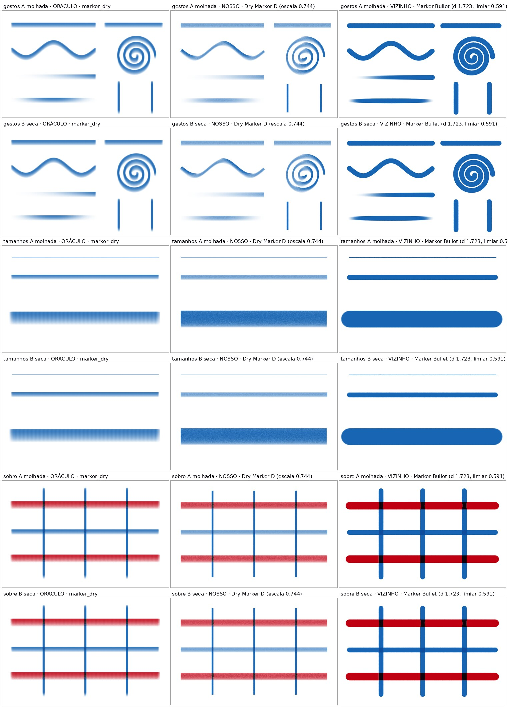
Colunas: 1ª = Rebelle · 2ª = o nosso · 3ª = um pincel parecido da nossa biblioteca (só para comparar).
O revisor ainda viu: Diferenças já medidas: riscas e tamanho com a velocidade.
19 Fringe Bloom
Aquarela que abre franja na borda (flor d’água).
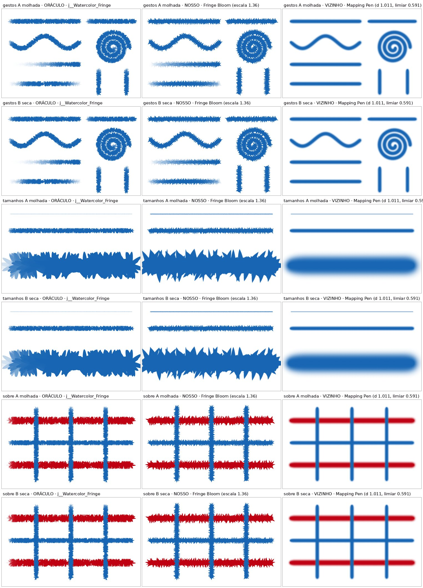
Colunas: 1ª = Rebelle · 2ª = o nosso · 3ª = um pincel parecido da nossa biblioteca (só para comparar).
O revisor ainda viu: O revisor reconheceu o nosso em todas as linhas.
20 Grunge
Textura suja e áspera.
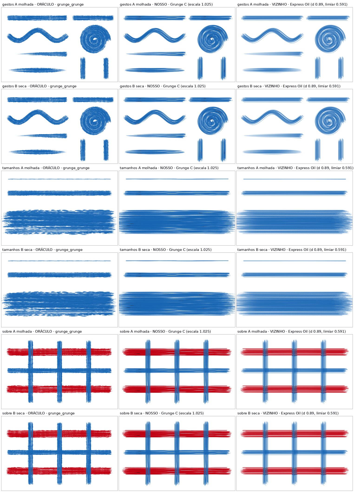
Colunas: 1ª = Rebelle · 2ª = o nosso · 3ª = um pincel parecido da nossa biblioteca (só para comparar).
O revisor ainda viu: Nosso faz riscas contínuas; o de fora faz traços partidos.
21 Spatter Watercolor
Respingos de aquarela.
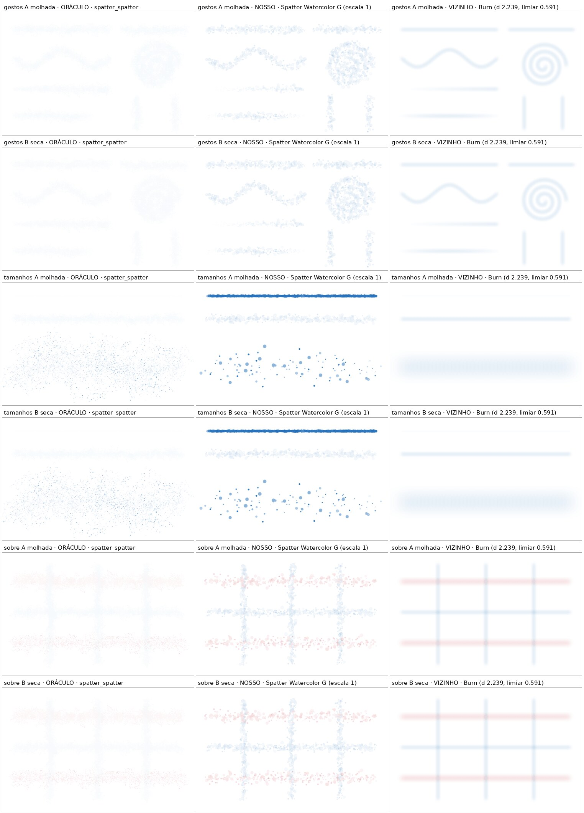
Colunas: 1ª = Rebelle · 2ª = o nosso · 3ª = um pincel parecido da nossa biblioteca (só para comparar).
O revisor ainda viu: As gotas saem grandes e escuras demais.
22 Knife Stain
Espátula de óleo que mancha.
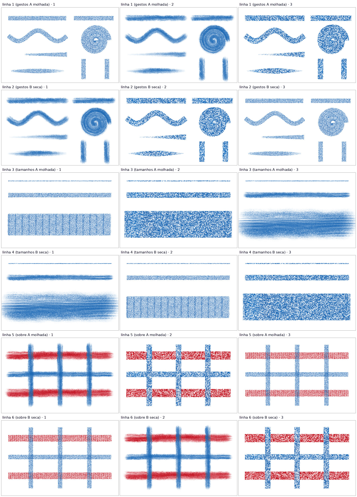
Esta foto está embaralhada (R = Rebelle, N = o nosso; a outra coluna é um pincel parecido): linha 1: R=1, N=3 · linha 2: R=3, N=2 · linha 3: R=1, N=2 · linha 4: R=2, N=3 · linha 5: R=3, N=2 · linha 6: R=1, N=3
O revisor ainda viu: O óleo ainda apaga parte do grão fino.
23 Knife Grainy
Espátula de óleo com grão.
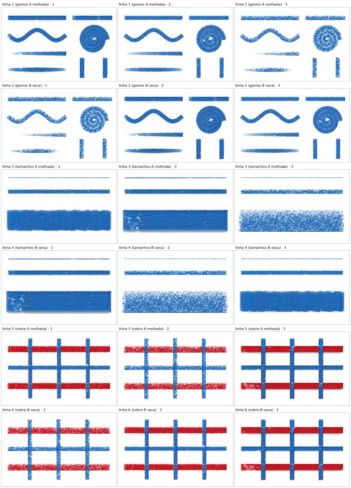
Esta foto está embaralhada (R = Rebelle, N = o nosso; a outra coluna é um pincel parecido): linha 1: R=3, N=2 · linha 2: R=1, N=3 · linha 3: R=3, N=1 · linha 4: R=2, N=3 · linha 5: R=2, N=1 · linha 6: R=1, N=2
O revisor ainda viu: O grão ainda fica cheio demais (o óleo o preenche).
24 Dabber 4
Pincel de óleo de batidinhas.
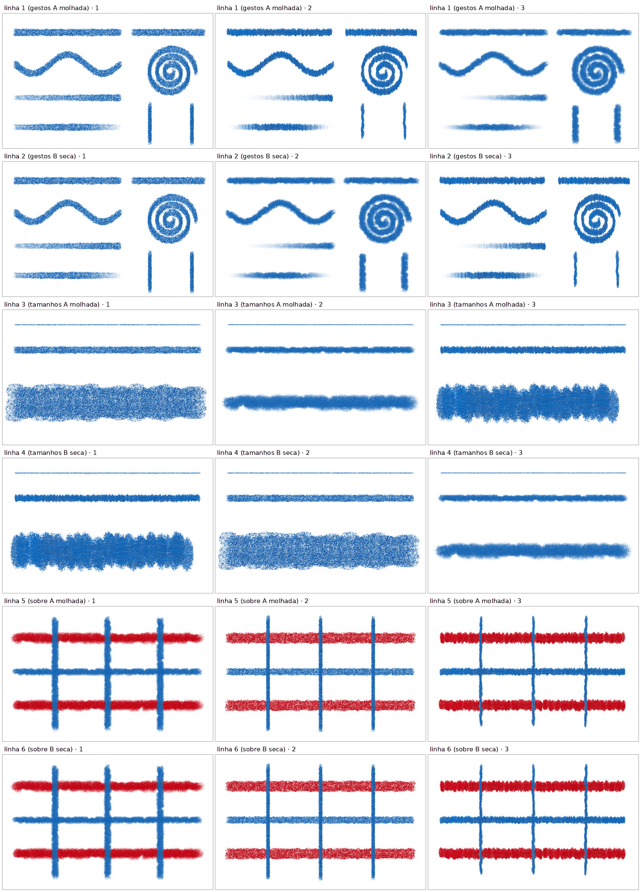
Esta foto está embaralhada (R = Rebelle, N = o nosso; a outra coluna é um pincel parecido): linha 1: R=1, N=2 · linha 2: R=1, N=3 · linha 3: R=1, N=3 · linha 4: R=2, N=1 · linha 5: R=2, N=3 · linha 6: R=2, N=3
O revisor ainda viu: A borda em volta das batidas sai larga demais.
25 Metallic Flat
Pincel chato de óleo metálico.
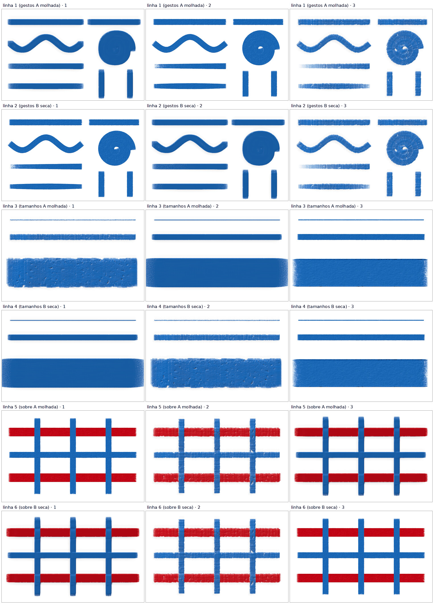
Esta foto está embaralhada (R = Rebelle, N = o nosso; a outra coluna é um pincel parecido): linha 1: R=2, N=1 · linha 2: R=1, N=2 · linha 3: R=3, N=2 · linha 4: R=3, N=1 · linha 5: R=1, N=3 · linha 6: R=3, N=1
O revisor ainda viu: O óleo ainda apaga parte do grão fino.